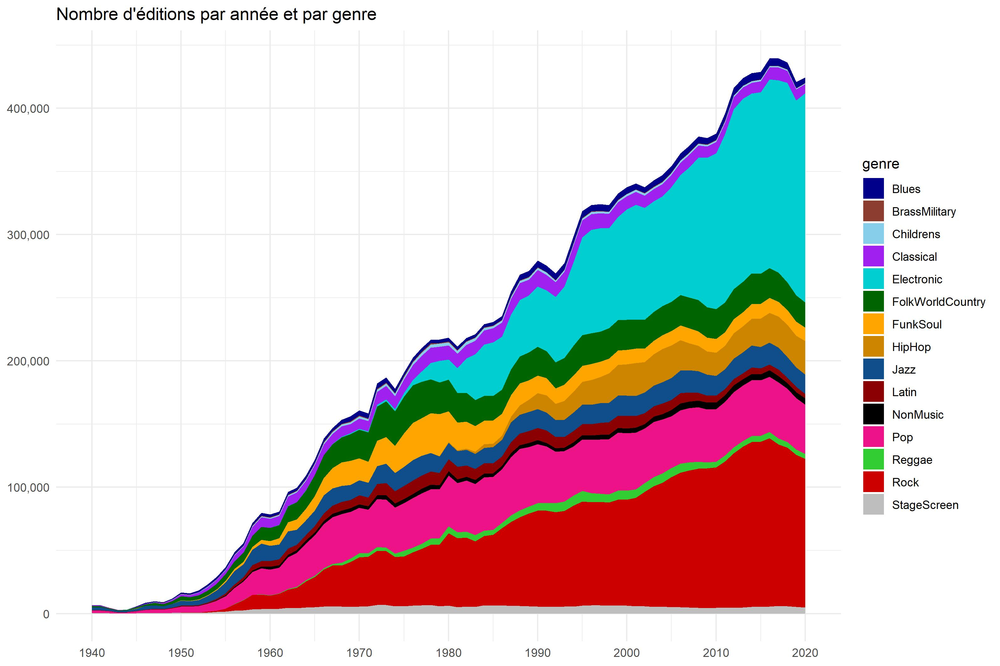
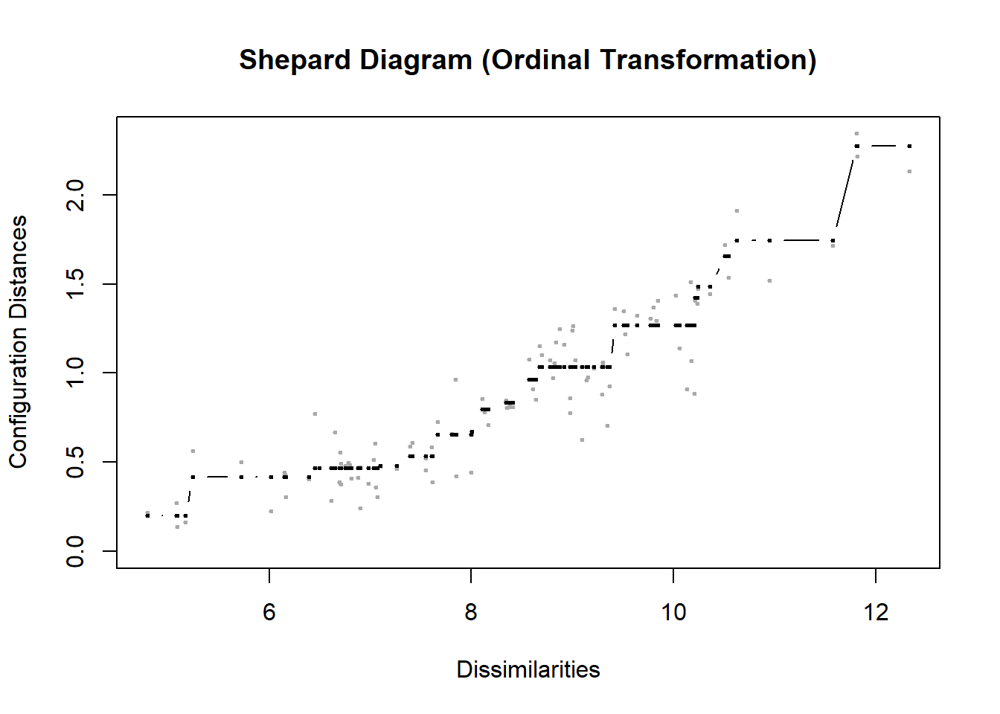

La production musicale se déploie dans les boutiques par une organisation qui privilégie le genre, ou le style, puis souvent par artiste. Ce sont les catégories qui organisent le marché, du moins la manière dont il se présente spatialement visuellement, psychologiquement aux consommateurs. Ces catégories peuvent avoir différents niveaux de granularité ( les styles se comptent par centaines, les genres une vingtaine) et peuvent se croiser. Certains album de Miles Davis furent aussi Jazz que Funck ou rock. Il y a de bonne chance que l’étiquetage soit fidèle.
Ce système de codage permet de se pencher sur la définition de ce qu’est un genre. Dans une optique distributionnelle le genre se définit dans son rapport aux autres. C’est ce que nous voulons étudier. Comment les genres évoluent dans leur rapports aux autres genres.
1 Genres, les uns envers les autres
Le sens n’est pas dans les symboles mais dans le rapport des signes. Au cours du temps, le genre Rock peut changer de sens, parce qu’il entretient des familiarités avec les autres genres qui peuvent varier avec le temps.
C’est ce que nous voulons mesurer : à chaque période quels sont les genres les plus proches d’un genre particulier. L’idée va être pour chaque genre, chaque cible, de compter la fréquence de cooccurrences d’autres genres. La procédure est de sélectionner dans le corpus les éditions qui sont taguées par le genre x, et de compter la fréquence des autres genres pour chaque année. On va donc construire une sorte de spectre catégoriel qui peut caractériser l’évolution qualitative de chacun des genres.
Rappelons juste l’évolution quantitative calculée dans la note précédente.

Figure 1 : évolution du nombre d’éditions par genre
Code
#tools#packageslibrary(tidyverse)library(ggrepel)library(word2vec)library(doc2vec)library(fastcluster) #pour aller plus vite en hclibrary(Rtsne)library(scales)library(zoo)library(smacof)# pour ggplottheme_set(theme_minimal())breaks =c(1900, 1910, 1920,1930,1940,1950,1960,1970,1980,1990,2000,2010,2020)breaks2 =c(1945, 1950, 1955,1960,1965,1970,1975,1980,1985,1990,1995,2000,2005, 2010, 2015,2020)# les couleurs des genres . Y-a-il une conventions ?col_genre<-c("blue4","coral4","skyblue","purple" , "darkturquoise","darkgreen","orange1","orange3","dodgerblue4","darkred","black","deeppink2","limegreen","red3","grey")col_format=c("brown4", "skyblue1", "skyblue2", "skyblue3","grey","cyan", "grey30")
Les transitions de genres sont une bonne manière de saisir le genre. Vers qui porte-t-elles ? la méthode consiste juste à calculer la probabilité qu’un album, tagué par un genre, soit aussi tagué par un autre genre, bref, c’est une probabilité conditionnelle. Quelles sont les chance qu’un album de rock soit aussi du blues par exemple ?
Un petit point méthodologique doit être rappelé : la taxinomie de Discogs, s’est constituée progressivement. voir ainsi que. Elle n’est pas exclusive, une même oeuvre peut être étiquetée par plusieurs genres. C’est sur cette propriété que nous nous appuyons dans l’analyse.
On ne retient dans l’analyse que les œuvres originales, les rééditions plus tardives, pouvant faire apparaître d’autres genres ultérieurement. On saisit bien le sens du genre au moment où l’œuvre est publiée. Ceci dit c’est un point à discuter, les étiquettes étant données rétrospectivement, sans qu’on ne connaisse la date d’étiquetage. Un risque existe qu’on qualifie aujourd’hui un genre, alors qu’il n’existait pas.
Code
X_genre<-c("Blues", "BrassMilitary", "Childrens","Classical","Electronic", "FolkWorldCountry","FunkSoul" ,"HipHop" ,"Jazz","Latin","NonMusic","Pop","Reggae","Rock","StageScreen") # Create a Vector with Columnscolumns =c("year","genre","d", "p") #Create a Empty DataFrame with 0 rows and n columnsfoo =data.frame(matrix(nrow =0, ncol =length(columns))) # Assign column namescolnames(foo) = columns# print DataFrameprint(foo)
[1] year genre d p
<0 rows> (or 0-length row.names)
Code
for (G in X_genre){ foo2<-foo1 %>%filter_(paste(G, "==", 1))%>%pivot_longer(-c(id, year), names_to="genre", values_to="value") %>%group_by(year, genre) %>%summarise(n=sum(value))foo3<-foo2%>%filter(genre==G)%>%select(-genre) %>%rename(!!G := n) library(zoo)foo4<-foo2 %>%left_join(foo3)%>%mutate_(paste("d=n/",G))%>%rename(d=5) %>%select(-3,-4) %>%filter(genre !=G) %>%group_by(genre)%>%mutate(p=rollapply(d, 3, mean, fill=0,na.rm=TRUE))ggplot(foo4, aes(x=year, y=reorder(genre, p)))+geom_tile(aes(fill = p))+scale_fill_gradient2(low ="skyblue1", mid ="seashell", high ="deeppink2", midpoint=.1,limits=c(0,.7), name ="Probabilité") +theme(axis.text.x =element_text(angle =45, vjust =1, hjust =1))+labs(title =paste("Un nouvel album de",G, " peut aussi être catégorisé comme..."), x=NULL, y=NULL) +scale_x_continuous(breaks = breaks2)ggsave(filename=paste0("./images/genre10_", G , ".jpeg"), plot=last_plot(), width =27, height =18, units ="cm")foo5<-foo4%>%mutate(paste("target==",G))foo<-rbind(foo,foo5)}
3 Analyse
3.1 Le Rock
C’est assez spectaculaire, si dans les années 50 il se confond avec le blues, c’est à la pop qu’il s’identifie. Par la suite, il n’est plus attaché à aucun genre, il s’autonomise en quelque sorte conquiert son indépendance.
Figure 2 : le cas du Rock
3.2 Le Jazz
La tradition du Jazz l’attachait à la pop jusqu’au début des années 70. Il devient plus funk au milieu des années 70 ainsi que rock mais en demi-teinte. Aujourd’hui, il semble avoir retrouvé une connivence avec le Rock, mais surtout se teinte de musique électronique.
Figure 3 : le cas du Jazz
3.3 L’Electronique
Rappel de la définition :
La musique électronique est une musique qui utilise des instruments de musique électroniques et une technologie musicale électronique dans sa production, un musicien électronique étant un musicien qui compose et/ou interprète cette musique. En général, on peut faire une distinction entre le son produit par des moyens électromécaniques et celui produit par la technologie électronique. Parmi les exemples de dispositifs électromécaniques de production de sons, on peut citer le telharmonium, l’orgue Hammond et la guitare électrique. La production de sons purement électroniques peut être réalisée à l’aide d’appareils tels que le thérémine, le synthétiseur de sons et l’ordinateur. (Fourni par Wikipédia sous Creative Commons Attribution CC-BY-SA 4.0 -Traduit avec www.DeepL.com/Translator)
Un curieux destin qui confond le genre avec le classique dans les années 50, s’associe dans les années 60 et 70 au jazz, puis au funk (merci Parliament !) et trouve enfin son autonomie teinté de pop et de rock dans la période contemporaine.
Figure 4 : le cas de l’éléctronique
3.4 La Pop
La pop est un cas paradigmatique. La rupture d’avec le jazz est consommée au cours des années 60 au profit du rock que rééquilibre au cours des années 80 les musiques électroniques.
Figure 4 : le cas de la pop
3.5 Le Classique
Si le classique a donné naissance à la musique électronique, la production contemporaine se régénère avec l’électronique. Joli pied de nez!
Figure 5 : le cas du classique
4 Analyse multivariée temporelle
Puisque nous disposons de ces données, genre par genre, une approche plus configurationnelle peut être envisagée pour mesurer les dérives dans le systèmes de relations.
Pour chaque année on dispose d’un tableau qui concatène les genres cibles, et les genres attracteurs. On souhaite présenter les similarités entre les genres cible à partir des profils de genre attracteurs. Autrement dit deux groupes cibles seront similaires s’ils sont co-tagués par les mêmes genres. Les valeurs représentent l’attraction du style de la ligne i par celui de la colonne j ( la proportion de i qui est aussi taguée j ), un genre s’attire lui-même , on lui donne une valeur de 1.
examinons ceci en détail, on examine le cas de 2020.
On notera au passage que la somme de chaque ligne ( - 1 si on enlève l’auto-attraction) mesure la tendance d’un style à être complété par d’autres étiquettes, en quelque sorte sa dépendance aux autres genres pour être qualifié. En colonne c’est la capacité à attirer d’autres styles( -1) et donc à les qualifier et à exercer une influence.
Après cette analyse synthétique, on peut suhaiter s’engager dans une analyse plus holistique. En utilisant une analyse de type MDS.
Les distance entre les genres cibles, ceux dont on veut connaitre à tel point ils sont précisés par les autres genre, peut être calculé par une distance de canberra qui est une variation de la distance de manhantan mais se prete bien à nos variable qui ne peuvent prendre de valeurs qu’entre 0 et 1. 1 Signifie que pour les unités taguée X sont aussi taguée Y. X est le max de Y. La similarité absolue.
Pour le modèle MDS, on choisit un modèle ordinal, plus robuste. On en donne la configuration, mais aussi l’ajustement.
plot(mds, plot.type ="Shepard", main ="Shepard Diagram (Ordinal Transformation)")
ON work in progress à partir d’ici.
Un mds avec une fenêtre glissante mais d’abord de manière séquentielle.
Traiter la question de l’asymétrie
on anime ensuite
Code
#mise en forme des données#attention avant 1978 il n'y a pas de hip hop#intitiation# Create a Vector with Columnscolumns =c("V1","V2","genre", "year") #Create a Empty DataFrame with 0 rows and n columnsfoo4 =data.frame(matrix(nrow =0, ncol =length(columns))) # Assign column namescolnames(foo4) = columns#loopfor(i in1982:2021){#i=2020 foo2<-foo1 %>%filter(year==i)%>%column_to_rownames(var="target") %>%select(-year)foo3<-foo2%>%rownames_to_column(var="genre")%>%select(genre)mds <- foo2 %>%dist(method="canberra") %>%mds( type ="ordinal")mdscoord<-mds$conf %>%as_tibble() %>%cbind(foo3)%>%mutate(year= i)foo4<-rbind(foo4,mdscoord) #cumul fichiersggplot(mdscoord, aes(x=D1, y=D2, label= genre))+geom_text_repel(aes(label=genre))+labs(title=paste(i))plot(mds, plot.type ="Shepard", main ="Shepard Diagram (Ordinal Transformation)")}

Code
#carte animéelibrary(gganimate)gan<-ggplot(foo4, aes(D1, D2, label = genre)) +geom_text(aes(color=genre)) +scale_colour_manual(values=col_genre)+# Here comes the gganimate specific bitslabs(title ='Year: {frame_time}', x =NULL, y=NULL) +transition_time(year) +shadow_wake(wake_length =0.1, alpha =0.05)+ease_aes('cubic-in-out') animate(gan, duration =76, fps =5, renderer =gifski_renderer(loop = T))
Comparer les solutions dans le temps est rendu difficile par le fait que les espaces ne sont pas équivalents, même si les configuations sont identiques. L’analyse procustééenne vise à ramené la configuration d’une cible à celle d’un test par des opérations de dilatation, de translations, et de rotations. L’idée est amener deux configurations, deux formes, dans l’espace le plus proche.
Pour l’anecdote et l’exemple, c’est par ce type de méthode qu’on compare des crânes de périodes ou de région différentes en anthropologie, pour apprécier leurs différences dans un même repère. On comprend que la méthode permet de se concentrer sur les différences entre la configuration test et la configuration cible indépendamment des espaces dans lesquels ils ont été projetés. Ce sont les écarts qui deviennent intéressants car ils traduisent des dérives de signification.
La stratégie d’analyse va donc êtres de faire cette comparaison, de manière glissante, en calculant la dérive de la configuration à t, par rapport à la configuration ajustée pour la comparaison à t+1.
’idée va être d’opérer cette transformation de manière glissante en prenant pour test, la configuration précédente, telle qu’elle a été ramenée à la cible.
Code
# Create a Vector with Columnscolumns =c("D1","D2","D1b", "D2B", "year") #Create a Empty DataFrame with 0 rows and n columnsfoo =data.frame(matrix(nrow =0, ncol =length(columns))) # Assign column namescolnames(foo) = columns# print DataFrameprint(foo)